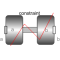

RevoluteRevolute cut-joint and translational directions may be constrained or released |

|
Information
This information is part of the Modelica Standard Library maintained by the Modelica Association.
This model does not use explicit variables e.g. state variables in order to describe the relative motion of frame_b with respect to frame_a, but defines kinematic constraints between the frame_a and frame_b. The forces and torques at both frames are then evaluated in such a way that the constraints are satisfied. Sometimes this type of formulation is also called an implicit joint in literature.
As a consequence of the formulation the relative kinematics between frame_a and frame_b cannot be initialized.
In particular in complex multibody systems with closed loops this may help to simplify the system of non-linear equations. Please compare the translation log using the classical joint formulation and the alternative formulation used here in order to check whether this fact applies to the particular system under consideration.
In systems without closed loops the use of this implicit joint does not make sense or may even be disadvantageous.
See the subpackage Examples.Constraints for testing the joint.
Parameters (6)
| x_locked |
Value: true Type: Boolean Description: = true: constraint force in x-direction, resolved in frame_a |
|---|---|
| y_locked |
Value: true Type: Boolean Description: = true: constraint force in y-direction, resolved in frame_a |
| z_locked |
Value: true Type: Boolean Description: = true: constraint force in z-direction, resolved in frame_a |
| animation |
Value: true Type: Boolean Description: = true, if animation shall be enabled (show sphere) |
| n |
Value: {0, 1, 0} Type: Axis Description: Axis of rotation resolved in frame_a (= same as in frame_b) |
| sphereDiameter |
Value: world.defaultJointLength / 3 Type: Distance (m) Description: Diameter of sphere representing the spherical joint |
Inputs (2)
| sphereColor |
Default Value: Types.Defaults.JointColor Type: Color Description: Color of sphere representing the spherical joint |
|---|---|
| specularCoefficient |
Default Value: world.defaultSpecularCoefficient Type: SpecularCoefficient Description: Reflection of ambient light (= 0: light is completely absorbed) |
Connectors (2)
Components (3)
| world |
Type: World |
|
|---|---|---|
| R_rel |
Type: Orientation Description: Dummy or relative orientation object from frame_a to frame_b |
|
| sphere |
Type: Shape |
Used in Examples (1)
|
Modelica.Mechanics.MultiBody.Examples.Constraints Body attached by one spring and revolute joint or constrained to environment |